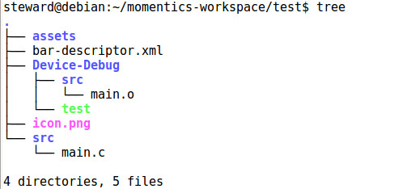

Steward
分享是一種喜悅、更是一種幸福
手機 - Blackberry Passport - 如何打包成Bar檔案
使用Momentics IDE產生一個測試的Native範例

bar-descriptor.xml
<?xml version="1.0" encoding="utf-8" standalone="no"?>
<qnx xmlns="http://www.qnx.com/schemas/application/1.0">
<id>com.example.test</id>
<asset path="assets">assets</asset>
<asset path="icon.png">icon.png</asset>
<configuration name="Device-Debug">
<platformArchitecture>armle-v7</platformArchitecture>
<asset path="Device-Debug/test" entry="true" type="Qnx/Elf">test</asset>
</configuration>
<name>test</name>
<versionNumber>1.0.0</versionNumber>
<buildId>1</buildId>
<description>The test application</description>
<author>Example Inc.</author>
<initialWindow>
<systemChrome>none</systemChrome>
</initialWindow>
<icon>
<image>icon.png</image>
</icon>
<env var="LD_LIBRARY_PATH" value="app/native/lib"/>
</qnx>
接著必須安裝Blackberry 10 Native SDK，才可以使用如下指令轉換成Bar檔案
$ cd ~/bbndk-2.1.0/host/linux/x86/usr/bin $ ./blackberry-nativepackager -package ~/Downloads/test.bar ~/momentics-workspace/test/bar-descriptor.xml